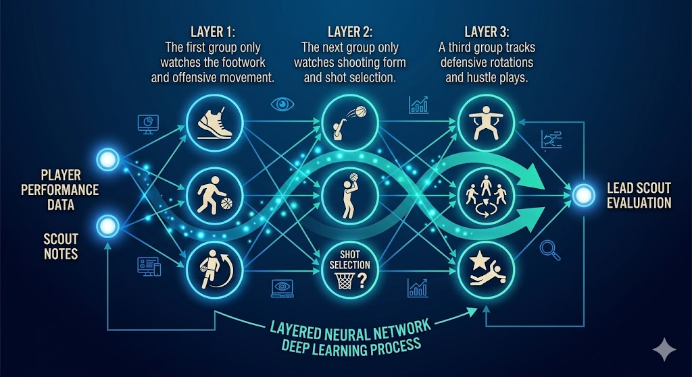

About Me
I am a professional with over six years of experience in the biomedical laboratory field where I have specialized in quality management and data integrity. My background in healthcare and science taught me the importance of precision and factual consistency when analyzing complex systems. Whether I am managing quality for a startup company or conducting detailed laboratory testing I rely on a structured approach to solve problems and improve processes.
My interest in AI data analytics stems from a passion for using technology to solve information overload and improve strategic decision making. I enjoy taking raw data and converting it into clear game plans that can be applied to any industry. By combining my analytical foundation from the lab with advanced AI techniques I create tools that provide precise insights and more efficient workflows. I am a lifelong learner who values diverse perspectives and I am dedicated to using data to find the truth behind the numbers in any professional environment.
Education
MS in AI Data Analytics | Indiana Wesleyan University | Anticipated 2027
MA in Sport Leadership | Indiana Wesleyan University | 2025
BS in Human Biology | University of Indianapolis | 2019
Professional Experience
Over six years of professional experience in the biomedical and clinical laboratory fields, focusing on quality management, technical analysis, and data integrity.
- Medical Lab Technician and Scientist
- Specialization in Biomedical Quality Management
- Experience in Clinical Startup Environments
- Technical Basketball Scout and Coach
Artifact 1: Basketball Player Analysis AI Chatbot
Master’s Degree Artifact 1 | AI Lab
Project Narrative and Goal
I am heavily involved in basketball coaching at the high school and college level and I wanted to solve the information overload in scouting. This project is a digital twin of my scouting reports and methodology. This is an AI analyst that turns raw data into actual game plans.
The Breakthrough
The biggest challenge was shifting the AI from a trainer mindset to a scout mindset. Initially even when I asked it to scout an opponent it would suggest ways for them to improve. I solved this by engineering a dual mode system with strict instructional triggers.
It took some trial and error with the instructions and a few nuclear updates to the logic but it now switches gears perfectly. This process allowed me to use my technical and conceptual skills to create a tool that makes the scouting process faster and more precise.
Technical Implementation
Platform: Chatbase LLM Integration
Logic Calibration: Grounded the model in my proprietary scouting methodology with a low temperature setting to prioritize accuracy and factual consistency.
Instructional Architecture: Engineered a Dual Mode System
- Keyword SCOUT triggers an aggressive tactical mode to hunt for opponent weaknesses
- Keyword AUDIT triggers an internal focus on player development and training
System Previews
Scout Mode Tactical Analysis Logic

Audit Mode Player Development Focus

Ready to see the logic in action?
Interact with the Basketball AI ChatbotArtifact 2: Machine Learning and Deep Learning Analysis
Master’s Degree Artifact 2 | AI Lab
Project Narrative and Goal
In our lessons two great examples of machine learning are classification and reinforcement learning. These approaches work in very different ways depending on what we are trying to achieve and how we want the system to learn from the data.
Classification in Medical Diagnosis
One real world application of classification which is a form of supervised learning is medical diagnosis for things like heart disease. This approach is very suitable for this problem because we can provide the system with labeled data from thousands of past patients.
Deep Learning and Autonomous Driving
For deep learning a great example is the use of deep reinforcement learning for the actual driving decisions of automated cars like merging into highway traffic. This approach is suitable because merging is a complex and changing situation that requires the car to learn through experience.
Artifact 3: AI Leadership & Neural Network Analogies
Master’s Degree Artifact 3 | Leadership in AI
The Human Side of AI Integration
Leadership thrives when communication is adaptable and used as a path to motivate and direct individuals toward a common goal. For successful AI integration, leadership must bridge the gap between an overview vision and the everyday work of the team.
Conceptualizing Neural Networks: The Scouting Analogy
A simple way to understand a neural network is to think of it like a scouting department trying to evaluate a player. You have different scouts looking at specific details:
- Layer 1: The first group only watches the footwork and offensive movement.
- Layer 2: The next group only watches shooting form and shot selection.
- Layer 3: A third group tracks defensive rotations and hustle plays.
Neural Network Architecture: The "Scouting" Hierarchy

These scouts pass their individual notes up to the lead scout who combines all those small details to decide if the player is a good fit for the team.
Tools used: Gemini and Grammarly.
Artifact 4: Leadership and Navigating Human Bias
Master’s Degree Artifact 4 | Leadership in AI
Personal Value Statement
In the clinical lab and in basketball scouting I recognize how human bias can stand in the way of leading with peace and joy. Reminding myself of my commitment to high standards makes me want to lead differently. I believe that fostering an environment of awareness and empathy is essential to fulfilling my purpose. My core value is to promote a high level culture and environment along with inclusivity where every individual perspective is valued and every voice is heard.
Fostering Awareness and Education
I will conduct regular workshops tailored to the needs of my team to help us recognize our own blind spots. I want to encourage continuous learning through resources that highlight diverse experiences. Sometimes a simple reminder is necessary to ensure we are looking at the world with fresh eyes. By providing materials that show different viewpoints I can help my team and my players build stronger relationships.
Strategies to Address Human Bias
Implement Inclusive Practices
I will build diverse teams to bring multiple viewpoints into every decision. This diversity helps us identify biases that may not be apparent in a group where everyone thinks the same way. I will foster an inclusive culture by actively listening to all team members and ensuring that everyone has an opportunity to contribute.
Standardize Protocols
I will regularly audit the data tools and protocols we use to check for hidden biases. This includes using fairness metrics to ensure our results remain objective. There is nothing that should stand in the way of us fulfilling our work besides our own unwillingness to improve our methods.
Lead by Example
I will model empathy and fairness in every interaction whether I am in the clinic or on the court. I want to demonstrate a true commitment to addressing biases in my own decisions. I will promote a culture of self-reflection to create a more equitable environment for everyone.
Tools used Gemini and Grammarly were used for text summarization, initial drafting, and editing.